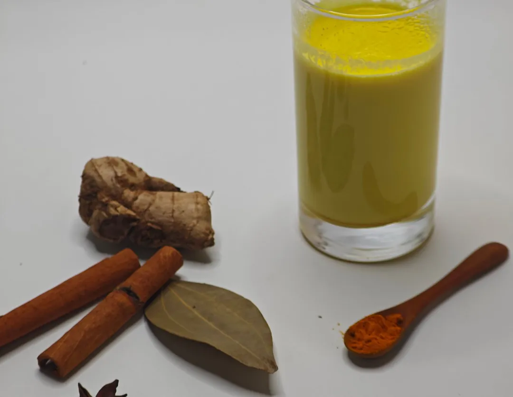
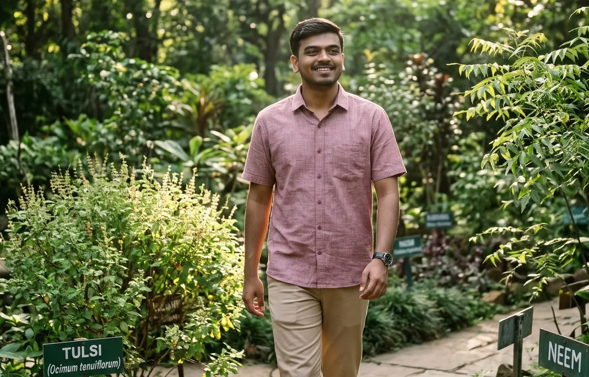

Yoga for Panchakarma recovery in Patna
Bihar has a special place in the story of modern yoga. The Bihar School of Yoga, founded in Munger in 1964, became one of the most influential yoga institutions in the world, and its teachers popularised the gentle pawanmuktasana series that many doctors now recommend for stiffness and digestive complaints. So it feels natural, at a Panchakarma centre in Patna, to end a programme with yoga. Not as a fitness class, and not as acrobatics, but as a simple daily practice that protects what the cleansing and the graded diet have begun.
Why yoga belongs in Paschat Karma
Paschat karma, the phase after cleansing, has two aims: rebuild strength and prevent the old problem from returning. The graded diet rekindles agni, the digestive fire. Rasayana nourishes. Yoga adds movement, posture and breath, which Ayurveda sees as essential for apana vata, the downward-moving force that governs the bowels, bladder and pelvis. Many people who come to us with gas, bloating, constipation and back stiffness sit for most of the day. Gentle, regular movement is often the missing piece.
History: what is ancient, what is medieval and what is modern
Precision matters here. The Ayurvedic classics, Charaka, Sushruta and Ashtanga Hridaya, recommend vyayama (exercise) as part of the daily routine, to the point of light sweating, and warn against excess. They do not describe these specific poses. Patanjali's Yoga Sutras, generally dated to the early centuries of the common era, define asana as a steady and comfortable posture but name very few poses. Detailed descriptions of postures and bandhas come from the hatha yoga texts: the Hatha Yoga Pradipika, usually dated to around the 15th century, describes uddiyana bandha in detail, and later texts such as the Gheranda Samhita describe bhujangasana and shalabhasana. Pawanmuktasana as a named practice and series is largely a 20th-century development, associated especially with the Bihar School of Yoga.
So yoga and Ayurveda are sister traditions with shared ideas, and combining them is a sensible modern practice, not a rule laid down in Charaka.
The four practices
Pawanmuktasana (wind-relieving pose)
Lying on the back, one or both knees are drawn towards the chest and held, with gentle breathing. The pressure of the thighs on the abdomen is traditionally said to help release trapped gas, which is how the pose gets its name. It is gentle and suits most beginners.
Bhujangasana (cobra pose)
Lying face down, the chest is raised gently using the back muscles, with the hands supporting lightly and the lower body on the floor. It stretches the front of the body and strengthens the back. Ayurvedic and yoga teachers often describe it as stimulating digestion through gentle stretch of the abdomen.
Shalabhasana (locust pose)
Lying face down, one leg, then both legs, are lifted a little from the floor while the upper body rests. It strengthens the lower back, buttocks and legs, and is commonly used in programmes for back health. Beginners start with half locust, one leg at a time.
Uddiyana bandha (abdominal lock)
Standing or sitting, after a complete exhalation and while holding the breath out, the abdomen is drawn in and up under the ribs, then released before inhaling. Hatha yoga texts praise it highly for abdominal health. It is also the most demanding of the four, must only be done on an empty stomach, and is unsuitable for many people. It should be learned from a qualified teacher, never from a video.
What research shows
Yoga and gut health has been studied, with mixed results. A 2025 systematic review and meta-analysis in the American Journal of Gastroenterology pooled 11 randomised trials with 535 patients with irritable bowel syndrome and found no clear overall difference between yoga and control groups in the severity of gastrointestinal symptoms, though the trials varied greatly in design. A 2022 Cochrane review on physical activity for irritable bowel syndrome assessed the wider evidence for exercise, and a 2026 study in the International Journal of Yoga Therapy explored yoga's relationship with autonomic function, social functioning and quality of life in people with IBS. Taken together, the evidence suggests yoga is a reasonable, low-risk part of a healthy routine that some people with digestive complaints find helpful, but it is not a proven treatment for any gut disease. We have not found trials of these four practices specifically after Panchakarma.
When to start after Panchakarma
- Not during cleansing days or the graded diet. The texts advise rest during and immediately after vamana and virechana. Exertion at this stage can cause weakness and dizziness.
- Begin gently once normal meals return and the doctor confirms you are ready, usually with pawanmuktasana and simple stretches.
- Add bhujangasana and half shalabhasana over the next days if comfortable.
- Uddiyana bandha only if suitable, and only after proper instruction.
Who should avoid or modify these practices
- Pregnancy: prone poses and uddiyana bandha are avoided; follow your obstetrician's advice
- Recent abdominal surgery, hernia, or recent back or neck injury
- Uncontrolled high blood pressure, heart disease or glaucoma, especially for uddiyana bandha and breath holding
- Peptic ulcer, acute abdominal pain, diarrhoea or menstruation, for uddiyana bandha
- Slipped disc with radiating pain or numbness, until assessed
- Any practice that causes pain should be stopped immediately
Yoga supports health; it does not replace medicines or treatment. Continue what your doctors have prescribed.
How Sabka Ved Wellness guides it
At the end of your programme, Dr. Aditya Kunal suggests a short, realistic routine based on your age, strength, back condition and digestive pattern. With his focus on gut and metabolic health, the emphasis is usually on practices that support regular bowels and reduce bloating, along with walking after meals. You are shown the postures, checked for alignment and told how to progress. If you need deeper yoga training, we suggest learning from a qualified yoga teacher.
A sample beginner routine, for understanding
- Two minutes of easy breathing, lying down
- Pawanmuktasana, each leg then both, holding for a few breaths
- Gentle knee rocking side to side
- Bhujangasana, low version, a few rounds
- Half shalabhasana, alternating legs
- Rest in shavasana for a few minutes
This is an illustration, not a prescription. Your routine is set after assessment. Consistency matters far more than intensity: fifteen calm minutes every morning will do more than an hour once a week.
Daily habits that work with yoga
- Practise on an empty stomach, ideally in the morning, or at least three hours after a meal
- Walk for 10 to 15 minutes after lunch and dinner
- Eat at fixed times and keep dinner light and early
- Drink warm water through the day
- Do not ignore the urge to pass stool
- Sit less: stand up and move for a few minutes every hour if you work at a desk
- Sleep by about 10 or 11 pm, since late nights disturb digestion the next day
Why it costs what it does
The yoga guidance at the end of a programme is part of the consultation and follow-up rather than a separate expensive package. Its value lies in being specific: a few practices, chosen and checked for you, that you can keep doing for years at no cost.
Book a consultation
If you are planning Panchakarma, or want a safe routine for digestion and back health, ask during a consultation. Request a slot through our appointment page or book at superprofile.bio/bookings/dradityakunal.
Sources
- Saab O et al. Yoga for irritable bowel syndrome: a systematic review and meta-analysis of randomized controlled trials. Am J Gastroenterol, 2025
- Physical activity for treatment of irritable bowel syndrome. Cochrane Database Syst Rev, 2022
- Impact of yoga on autonomic function, social functioning and quality of life in people with IBS. Int J Yoga Therap, 2026
We also serve patients from


Preparation, therapy, recovery. In that order.


Related therapies
Pages that pair naturally with this one.


Questions about Yoga for Panchakarma recovery

Not during cleansing or the graded diet. Gentle yoga usually begins once normal meals return and the doctor confirms you are ready.
It is traditionally used for this, and many people find it comfortable. Research on yoga for gut symptoms is mixed, so it is best seen as supportive.
No. It must be done on an empty stomach and avoided in pregnancy, high blood pressure, heart disease, hernia, ulcers, recent surgery and menstruation. Learn it from a qualified teacher.
No. The classics recommend exercise in general. These poses come from hatha yoga texts and, for pawanmuktasana, 20th-century yoga teaching.
No. A 2025 meta-analysis found no clear overall effect on IBS symptom severity, though some people find it helpful. Yoga supports health alongside treatment.